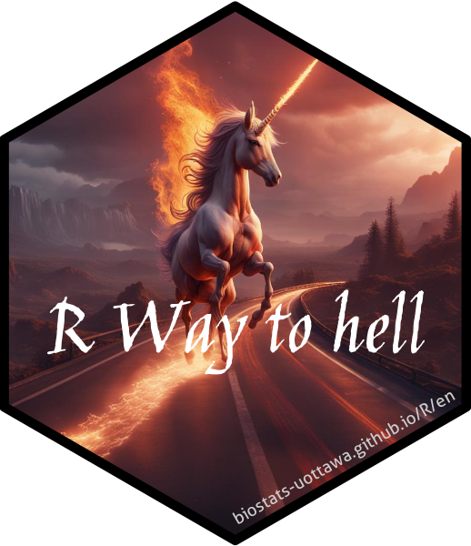

Biostats uOttawa
Le site regroupe les différentes ressources développées par Julien Martin pour les cours de biostatistiques à uOttawa.
Cours de biostatistique à uOttawa
Biostatistiques appliquées avec R (BIO 4X58)
Biostatistiques avancées et science ouverte (BIO8940)
Livres et tutoriels
Sur le chemin de l’enf-R (intro aux stats avec R)

Il s’agit d’un livre d’introduction aux statistiques et à R avec une approche multilingue. Le livre couvre une introduction à l’utilisation de base de R (chargement de données, manipulation et traçage), ainsi que des statistiques simples, la programmation, l’utilisation de github et de R markdown /Quarto avec R Studio et VS code.
Le livre (encore en développement) est disponible en anglais et français. J’ajouterai d’autres langues plus tard dans l’année, avec l’aide de volontaires.
Voici également quelques diapositives sur une introduction à R uniquement en anglais (slides).
Comment f-R un modèle animal
Consultations en statistique

Je fournis des services de consultation en biostatistique dans le cadre de mon service au département de Biologie. Pour discuter de vos problèmes en statistiques, veuillez simplement me contacter pour prendre un rendez-vous.
Veuillez avoir avec vous (ou me l’envoyer en avance):
- vos données
- votre code R (au minimum capable de charger les données)
- une hypothèse de travail ou question biologique claire
Une consultation statistiques n’implique pas de m’ajouter en tant ue que co-auteur. Je demande simplement que vous m’ajoutiez au Remerciements/Acknowledgements de votre thèse et/ou manuscript. Je reconnais que dans certains cas, e.g. nombres répétées de consultations sur le même projet incluant le développement de code et analyse spécifique au projet, je peux devenir co-auteur sur un projet. Cette discussion a habituellement lieu de manière naturelle et à toujours lieu de manière ouverte et ransparente avec les personnes impliquées, étudiant.e.s et PI.s. Jusqu’à maintenant, je n’ai jamais demandé à être co-auteur, et je suis devenu co-auteur sur 3 articles et j’ai été consulté pour plus de 50 projets.
Extension Quarto pour une science reproduisible
Extensions Quarto pour faciliter la production de document reproduisible pour les étudiants gradués en Biologie de l’Université d’Ottawa
- bio-uo-proposal:
donne la structure nécessaire pour un proposé de recherche avec la mise en page adéquate (format pdf seulement pour l’instant, format docx en développement). - bio-uo-thesis:
donne la structure et le formatage requit pour produire une thèse en format html et pdf pour l’université d’Ottawa. Le format html peut être rendu disponible via un site github.